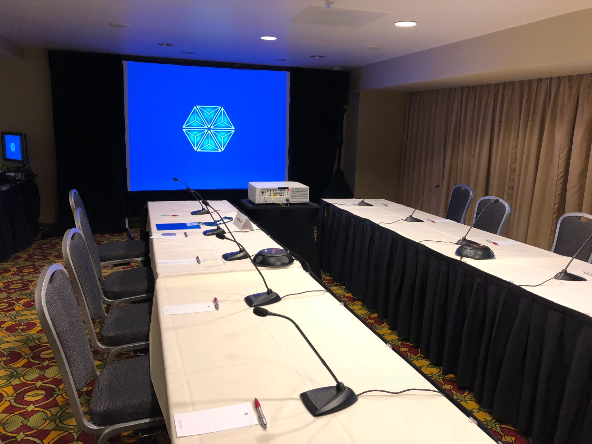
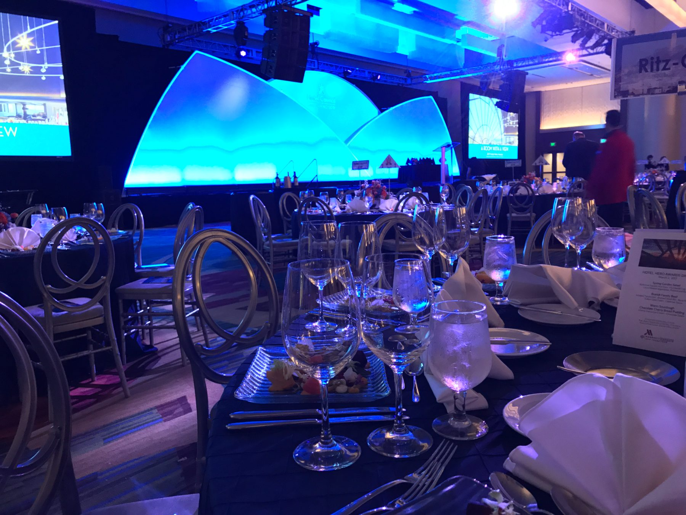
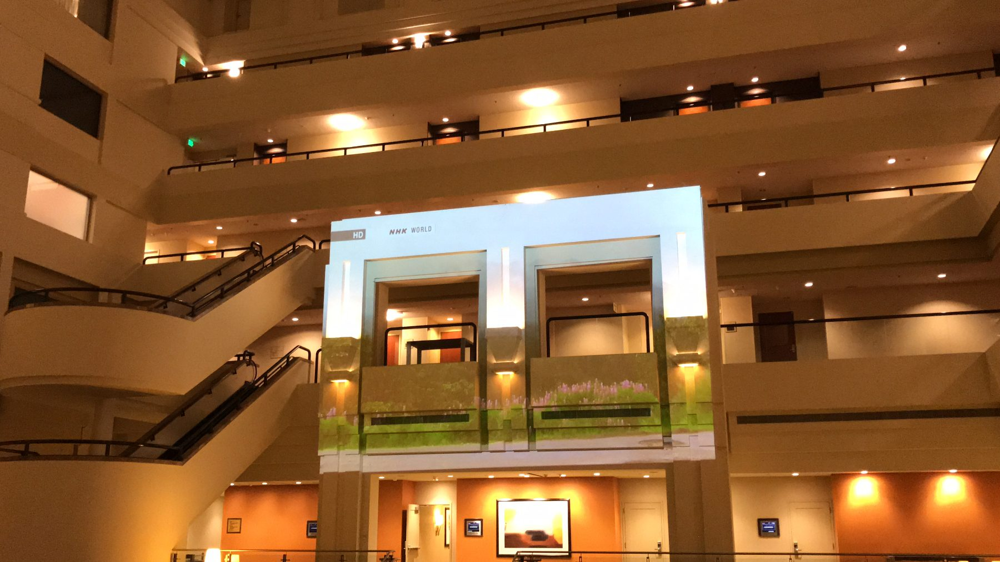
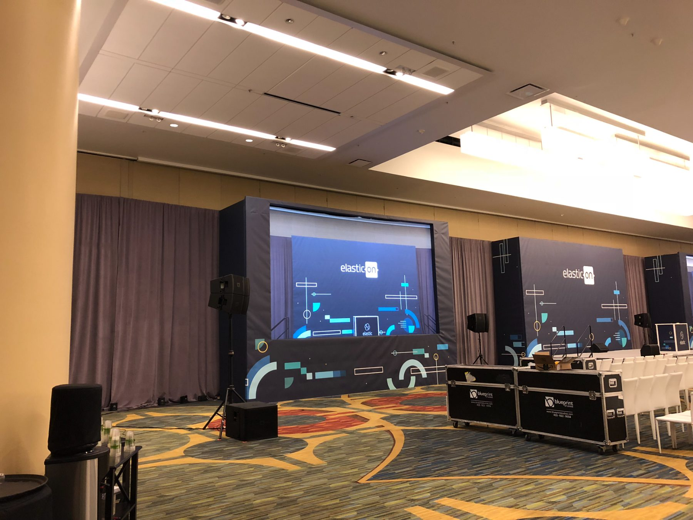
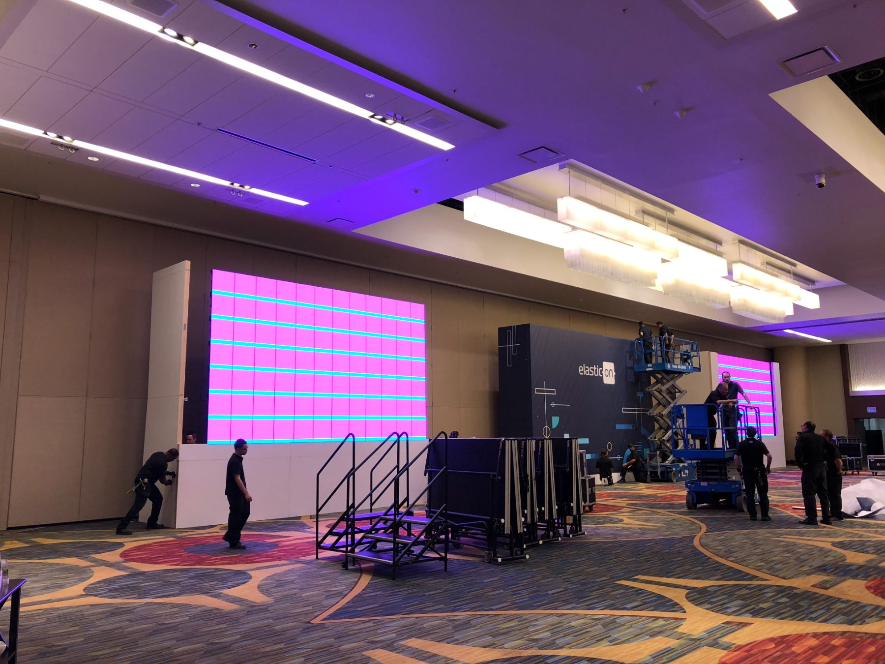
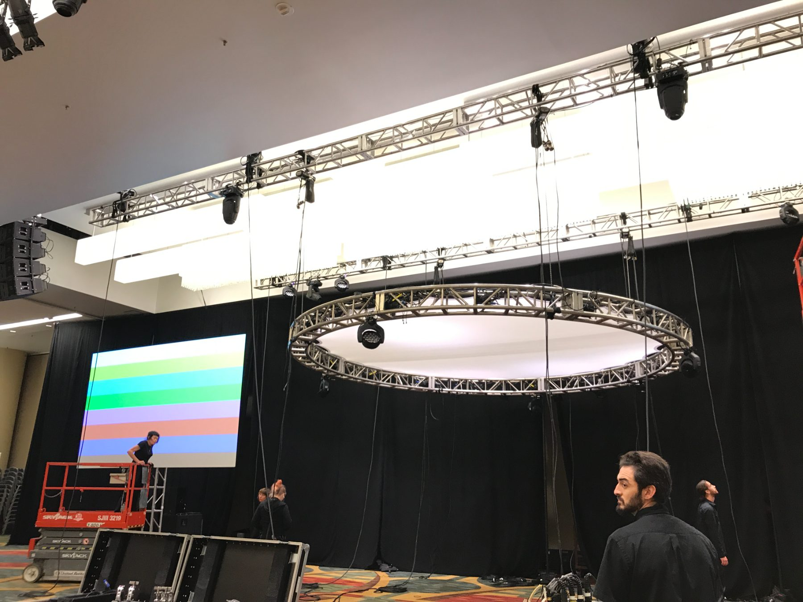
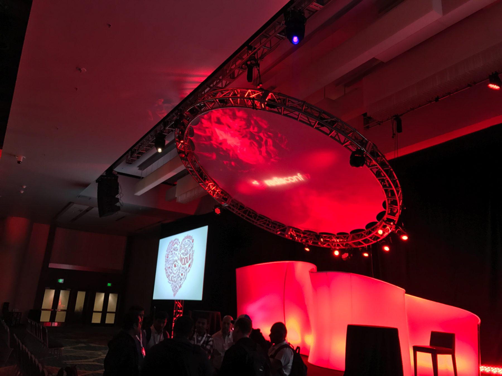

Stephen Gozza
This webpage is built using Sitecraft, a website builder I designed and coded myself instead of reaching for a SaaS template. It's a living project as both the app and the site still evolving, and I'd rather show that progress since everything creative is rarely ever finished.
Vision Pro Guided Tour
Vision Pro UI

Underdogs Episode 6
Pre-Production Visuals

Digital ID Rollout
Watch UI

M2 iPad Launch Film
All Device UI

Vision Pro Memories Ad
Vision Pro UI



Sitecraft
GitHub Website Builder
This website is made with Sitecraft, an original app built by Stephen Gozza to create websites hosted on GitHub



iPhone Dynamic Island Introduction Film
iPhone UI

Yoga Cutaway Scene
Watch UI

Scary Fast Event
Intro Video Device UI (00:00 - 01:43)

iPhone 15 Pro Spatial Video Scene
iPhone + Vision Pro UI

Vision Pro Airplane Ad
Vision Pro UI

Pastor Deck
Simplified slide builder that focuses on the content and allows the designer to theme the content without touching the slides themselves. Conveniently export to jpg-per-slide or .pptx


